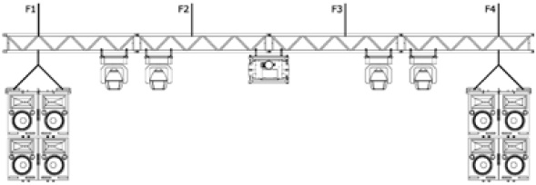

Arbeitsmittel zum Halten von Lasten über Personen sind so auszuwählen und zu betreiben, dass die Lasten für die gesamte Benutzungsdauer sicher gehalten werden.
Personen, die Arbeitsmittel zum Halten von Lasten über Personen verwenden, warten und prüfen, darf der Unternehmer oder die Unternehmerin nur einsetzen, wenn sie ausreichend befähigt sind. Die Befähigung legt der Unternehmer oder die Unternehmerin durch die Gefährdungsbeurteilung für die Verwendung der Arbeitsmittel zum Halten von Lasten über Personen fest. Dabei sind die Anforderungen an die Qualifikation dieser Personen auf Grundlage von Vorschriften und Regeln der Technik zu beachten (vgl. Betriebssicherheitsverordnung, TRBS 1203, DGUV Vorschrift 17 und 18, DGUV Regel 115-002, Muster-Versammlungsstättenverordnung, IGVW SQO2, IGVW SQQ2).
Die Gestaltung aller tragenden Elemente eines Laststrangs und der Sicherungselemente muss in Material und Formgebung folgende grundlegende Anforderungen erfüllen:
Konstruktive Anforderungen für tragende Elemente und Sicherungselemente
Die Arbeitsmittel müssen mit geeigneter Kennzeichnung sowie Benutzerinformationen ausgestattet und eindeutig identifizierbar sein hinsichtlich z. B. Hersteller, Typ, Tragfähigkeit, Baujahr und CE-Kennzeichnung.
Die bestimmungsgemäße Verwendung der Arbeitsmittel ist eindeutig anzugeben (z. B. Tragfähigkeit, ggf. Informationen zu unzulässiger Anwendung, Warnhinweise).
Weiterhin sind die in Regeln der Technik sowie in Herstellerangaben festgelegten Kriterien für die Prüfung und die Ablegereife zu berücksichtigen.
Das allgemein akzeptierte Prinzip, durch eigensichere Konstruktionen der Arbeitsmittel eine hinreichende Risikominimierung zu erreichen, ist durch die Festlegungen in technischen Regeln vorgegeben.
Die Festlegungen basieren auf langjährigen Erfahrungen aus qualitätsorientierter Fertigung bei einem hohen industriellen Entwicklungsstand. Unter diesen Voraussetzungen wird das Risiko des Teileversagens ausreichend gemindert.
Eigensicherheit wird durch Verdoppelung der Betriebskoeffizienten erreicht. Zusätzlich müssen folgende Voraussetzungen erfüllt sein:
Die Einfehlersicherheit wird durch den Einsatz zusätzlicher Sicherungselemente (Safeties) erreicht. (Die Anforderungen an diese Sicherungselemente sind in Abschnitt 2.3 beschrieben.)
Mit dieser Methode können folgend beispielhaft genannte, mögliche Fehler kompensiert werden:
In der Praxis wird bei Leuchten, Lautsprechern, Monitoren, Dekorationen und anderen Gegenständen im Produktions- und Veranstaltungsbetrieb, die mit Befestigungseinrichtungen für ortsveränderliche Verwendung (z. B. Zapfen und Hülse, C-Haken) montiert werden, die Sicherheit der Aufhängung durch die Qualität der Montage am Einsatzort beeinflusst. Deshalb ist für diese Anwendungen eine Sekundärsicherung erforderlich.
Ein Sicherungselement (Safety) ist so anzubringen, dass es keinen Fallweg zulässt. Ist ein Fallweg unvermeidbar, so ist dieser so gering wie möglich zu halten.
Bei der Sicherung von Arbeitsmitteln, die nach der Montage ausgerichtet werden müssen, wie z. B. Scheinwerfern, darf der maximale Fallweg von 20 cm nicht überschritten werden.
Auf eine zusätzliche Sicherung (Sekundärsicherung) kann verzichtet werden, wenn die Befestigungseinrichtung eigensicher ausgeführt ist und nur mit Werkzeug zu lösen sowie gegen Selbstlösen gesichert ist.
Lässt das Sicherungselement (Sicherungsseil) einen Fallweg zu, muss die Kraft berücksichtigt werden, die beim Sturz der Last in das Sicherungselement entsteht. Dabei ist die Höhe des Fallweges entscheidend. Unter Prüfbedingungen sind bei 20 cm Fallweg Kräfte bis zum 50-fachen der fallenden Last nachgewiesen worden.
|
Bei der Sicherung von Arbeitsmitteln, die nach der Montage ausgerichtet werden müssen (z. B. Scheinwerfer), darf der maximale Fallweg von 20 cm nicht überschritten werden. |
Für Arbeitsmittel, die als Anschlag- oder Lastaufnahmemittel eingesetzt werden, geben deren Hersteller in der Regel die Tragfähigkeit oder die Mindestbruchkraft an. Für das Halten von Lasten über Personen gilt:
Arbeitsmittel, bei denen die Werte der Tragfähigkeit für das Halten von Lasten über Personen nachgewiesen sind, werden nach den Herstellerangaben eingesetzt (vgl. Tabelle 1).
|
Die Regeln der Technik definieren Betriebskoeffizienten und Teilsicherheitsbeiwerte: Betriebskoeffizient Vereinfacht ermittelt sich der Betriebskoeffizient aus
dem Verhältnis von Mindestbruchkraft zu Tragfähigkeit
eines Elements. Betriebskoeffizienten für Anschlagmittel
sind in der Richtlinie 2006/42/EG (Maschinenrichtlinie)
Anhang 1 Punkt 4.1.2.5 festgelegt. Teilsicherheitsbeiwert Für Tragwerke sind in der Normreihe DIN EN 1990: 2010-12 ff. (Eurocode) Teilsicherheitsbeiwerte definiert. |

Abb. 1 Schematische Darstellung einer Lastverteilung an einer Traverse mit mehreren Aufhängungen
Sind zum Halten oder Bewegen einer Last mehrere Laststränge erforderlich, ist die Belastung jedes einzelnen Laststrangs zu ermitteln. Die ermittelte maximale Belastung ist grundsätzlich maßgebend für die Dimensionierung aller verwendeten Elemente in allen Laststrängen.
Bei Verdoppelung der Betriebskoeffizienten aller verwendeten Elemente gelten die so dimensionierten Laststränge als eigensicher.
Für bewegte Lasten sind bei der Festlegung der auftretenden Kräfte zusätzlich die aus der Dynamik (Beschleunigen und Abbremsen der Last) herrührenden Kräfte mit zu berücksichtigen. Als Richtwert für diese dynamischen Kräfte hat sich die Berücksichtigung von zusätzlich mindestens 20 Prozent bewährt.
Angaben zur Tragfähigkeit von Bauwerken beziehen sich in der Regel auf ruhende Lasten in vertikaler Richtung (ohne dynamische Lastanteile).
Anschlagpunkte am Tragwerk gelten als Schnittstellen zum Bauwerk und müssen Lasten sicher aufnehmen können. Anschlagpunkte sind definierte Positionen des Tragwerks, z. B. Knotenpunkte an Fachwerkträgern oder fest am Tragwerk angebrachte Ösen. Unterhalb dieser Schnittstelle zum Bauwerk werden alle Elemente im Laststrang eigensicher ausgeführt. Zusätzlich werden erforderlichenfalls Maßnahmen der Einfehlersicherheit durchgeführt.
Das Anschlagen von Lasten an Bauwerken ist nur zulässig, wenn der Betreiber eindeutige Angaben zur Nennbelastbarkeit der Anschlagpunkte nachweisen kann. Dies sind insbesondere:
Es dürfen nur die vom Betreiber freigegebenen Anschlagpunkte verwendet werden. Die Angaben des Betreibers zur Belastbarkeit der Anschlagpunkte dürfen weder bei Auf- und Abbau noch während des Betriebs überschritten werden. Dazu kann eine Lastmesseinrichtung eingesetzt werden.
Bei der Planung der Veranstaltung oder Produktion sind neben den Eigenlasten auch dynamische Kräfte, mögliche Störfalllasten und Zusatzlasten während des Betriebes sowie bei Auf- und Abbau zu berücksichtigen. Es entstehen z. B. zusätzliche Kräfte durch schräge Abspannungen und Beschleunigung von Lasten sowie durch ruckartiges Anhalten von bewegten Lasten.
Ein direktes Anschlagen an Tragwerkskonstruktionen mit Anschlagmitteln ist nur unter Erhalt der Maßnahmen des vorbeugenden Brandschutzes (z. B. Brandschutzbeschichtung) zulässig.
Nur wenn durch eine Beurteilung der Gefährdungen durch eine fachkundige Person nachvollziehbar festgestellt worden ist, dass Lasten beim Herunterfallen keine Personenschäden zur Folge haben können, kann von den grundlegenden Sicherheitsanforderungen abgewichen werden. Dies kann beispielsweise der Fall sein beim Einbinden von Vorhängen mit Bändern oder bei Mikrofonabhängungen, bei denen die Zugentlastung tragende Funktionen hat.